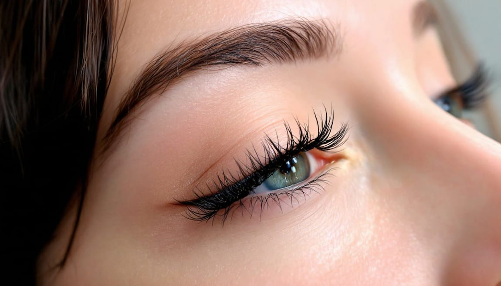

Pestañas y cejas

🌟 Cuidado y Estilización de Pestañas y Cejas 🌟
🔹 1. Pestañas: Cuidados, Crecimiento y Técnicas de Maquillaje
✅ Cuidado Natural de las Pestañas
Para mantenerlas fuertes y saludables:
- Desmaquillar siempre: Usa un desmaquillante suave para evitar la caída prematura de las pestañas.
- Aceites naturales: Aplica aceite de ricino, almendras o coco por las noches para fortalecerlas.
- Suplementos: La biotina y la vitamina E favorecen su crecimiento.
- Evitar rizadores metálicos excesivos: Pueden debilitarlas y quebrarlas.
💆 Tratamientos para el Crecimiento de Pestañas
Si buscas pestañas más largas y densas, existen varias opciones:
🔸 Sueros fortalecedores: Contienen péptidos, biotina y pantenol para estimular el crecimiento. Se aplican en la raíz como un delineador.
🔸 Aceites naturales: Ayudan a nutrir las pestañas de forma natural.
🔸 Laminado de pestañas: Tratamiento que alisa y da curvatura a las pestañas naturales.
🔸 Extensiones de pestañas: Aplicación de fibras sintéticas para un look más voluminoso.
🎨 Técnicas de Maquillaje para Pestañas
1️⃣ Rizado de Pestañas
- Usa un rizador de buena calidad antes de aplicar máscara.
- Calienta ligeramente el rizador con el secador para un mejor efecto.
2️⃣ Aplicación de Máscara de Pestañas
- Para alargar: Usa una máscara con fibras alargadoras y aplícala en zigzag.
- Para dar volumen: Opta por una máscara con cepillo grueso y cerdas separadas.
- A prueba de agua: Ideal para mayor duración, pero requiere un buen desmaquillante.
3️⃣ Pestañas Postizas
Si buscas más dramatismo, hay diferentes tipos:
- Tiras completas: Para eventos o looks impactantes.
- Pestañas individuales: Más naturales y pueden aplicarse solo en los extremos.
- Magnéticas: No requieren pegamento y son reutilizables.
📌 Consejo: Usa un pegamento de pestañas de calidad y espera unos segundos antes de pegarlas para mejor adherencia.
🔹 2. Cejas: Diseño, Depilación y Relleno
Las cejas enmarcan el rostro y pueden hacer una gran diferencia en la expresión facial.
✅ Diseño y Formas de Cejas
Cada forma de rostro tiene una ceja ideal:
- Rostro redondo: Cejas arqueadas para afinar el rostro.
- Rostro cuadrado: Cejas más suaves y redondeadas.
- Rostro alargado: Cejas rectas para acortar el rostro.
- Rostro ovalado: Cejas naturales con un arco suave.
📌 Consejo: Usa la técnica de los 3 puntos para diseñarlas:
- Inicio: En línea recta con el puente de la nariz.
- Punto más alto (arco): Alineado con el borde externo del iris.
- Final: En línea con la comisura del ojo.
💆 Métodos de Depilación de Cejas
🔸 Pinza: Preciso y permite dar forma detallada.
🔸 Cera: Rápido, pero puede irritar la piel sensible.
🔸 Hilo: Ideal para un acabado definido sin irritación.
🔸 Recorte con tijeras: Para cejas muy pobladas y desordenadas.
📌 Consejo: No depiles demasiado la ceja, las cejas gruesas y naturales son tendencia.
🎨 Técnicas de Maquillaje para Cejas
1️⃣ Relleno de Cejas
Para cejas despobladas o con espacios, puedes usar:
- Lápiz: Para trazos finos y naturales.
- Sombra: Da un acabado más difuminado.
- Gel con color: Aporta fijación y volumen.
- Jabón de cejas (soap brows): Para cejas peinadas hacia arriba y con efecto laminado.
📌 Consejo: Usa un tono de producto 1 o 2 tonos más claro si tienes cabello oscuro, y 1 o 2 tonos más oscuro si tienes cabello claro.
2️⃣ Laminado de Cejas
Técnica que alisa y fija las cejas en una forma más definida y peinada. Dura de 4 a 6 semanas.
3️⃣ Microblading y Micropigmentación
- Microblading: Técnica semipermanente con trazos finos que imitan el vello natural.
- Micropigmentación: Similar al microblading, pero con un efecto más sombreado.
🔹 3. Consejos para un Mejor Cuidado
✅ Exfolia las cejas y pestañas una vez por semana para evitar la acumulación de suciedad.
✅ Usa aceites naturales para nutrir y fortalecer los vellos.
✅ No arranques demasiado vello de las cejas para evitar que dejen de crecer.
✅ Evita frotar los ojos o pestañas para prevenir la caída prematura.